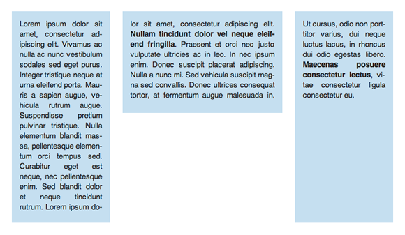

CSS Regions Samples by Adobe Web Platform
Contents
About
CSS Regions
brings new properties to CSS (Cascading Style Sheets) that provide:
- text containers with custom shapes.
- text that flows from one area into another.
We have put together a set of demos for you. They showcase some of the concepts we proposed to the W3C with
CSS Regions like content threads and content shapes
The samples presented here require a mini-browser using a specially modified version of WebKit. This experimental version will allow you to experiment with the samples, and are a way for us to explore the implementation options for these features. Please see the readme.txt file for instructions on how to run this browser.
You'll find basic samples that demonstrate individual CSS properties, as well as more complex ideas that highlight how they work together.
Why use CSS Regions
Web Designers and Developers
- Take advantage of new CSS properties that let you build rich interfaces with custom-shaped content boxes and multiple text flows.
- CSS Regions are easy to pick up. They build upon familiar CSS properties and structure.
See the basic samples
Read the documentation
Print Designers
- Bring high-fidelity print layouts to mobile devices and target multiple screen sizes with one highly adaptive layout.
Basic samples
-

Demonstrates: text flowing from one region into another.
CSS properties used:
-webkit-flow, content: from()
-

Demonstrates: multiple content threads with text flowing through regions of varying shapes.
CSS properties used:
-webkit-flow, content: from()
Documentation
Are you ready to roll up your sleeves and experiment with CSS Regions? The
documentation covers the properties that
have been prototyped so far.
You'll learn how to flow text from one element into another and have it render inside or around custom shapes using only CSS.
Feedback
Please keep in mind that the CSS Regions prototype is a work in progress.
The development so far has been done following the the
CSS Regions editor's draft.
Comments and suggestions for these documents are very welcome!
-
For comments on the CSS Regions editor's draft proposal please use the www-style@w3.org mailing list on the W3C website. Please use an identifier such as "[CSS Regions]" in the subject of your email.
-
If you have any questions or comments about the current prototype or the samples please drop us a message on the CSS Regions forum.
Any feedback on the proposals is very welcome. It helps us provide a feature that's both fun and useful in the modern web landscape.